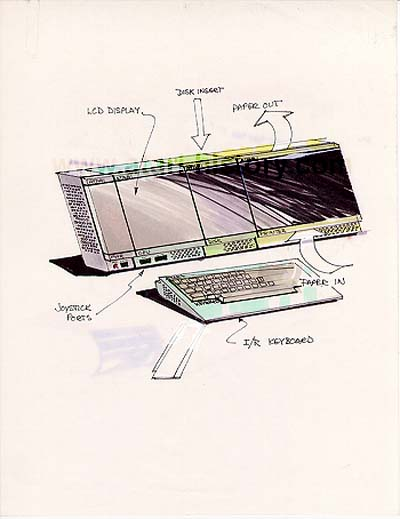
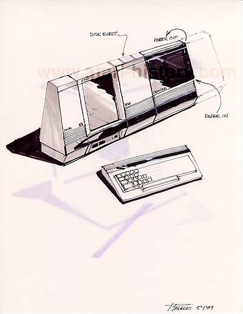
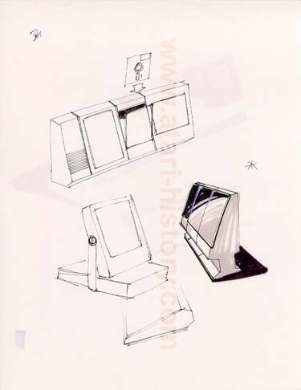

This first concept was almost built. This desktop system was
in modules which would be plugged into one another to supply a different
function. Starting with a power module, then add the CPU module
which sports an advanced LCD display screen, two front joystick ports.
Then add on a top loading 3.5" diskette drive. Next add in
a unique, almost Canon Inkjet functioning thermal printer.
Now finish the system off with an IBM "Peanut" PCjr'ish Infrared wireless
keyboard. This system packed in the latest and great in state
of the art technology which today would make fellow PC owners jealous.

This second drawing which
is similar to the above shows the configuration with a slightly different
chasis shape and although the keyboard is not shown with a cord, this configure
makes no mention or suggestion of an Infrared wireless keyboard.

Here are additional design styles along these same lines and concepts. The concept design to the center-right is quite stunning and very high-tech and forward thinking. Again, these designs even in today's PC market are eye-catching and very stylish.